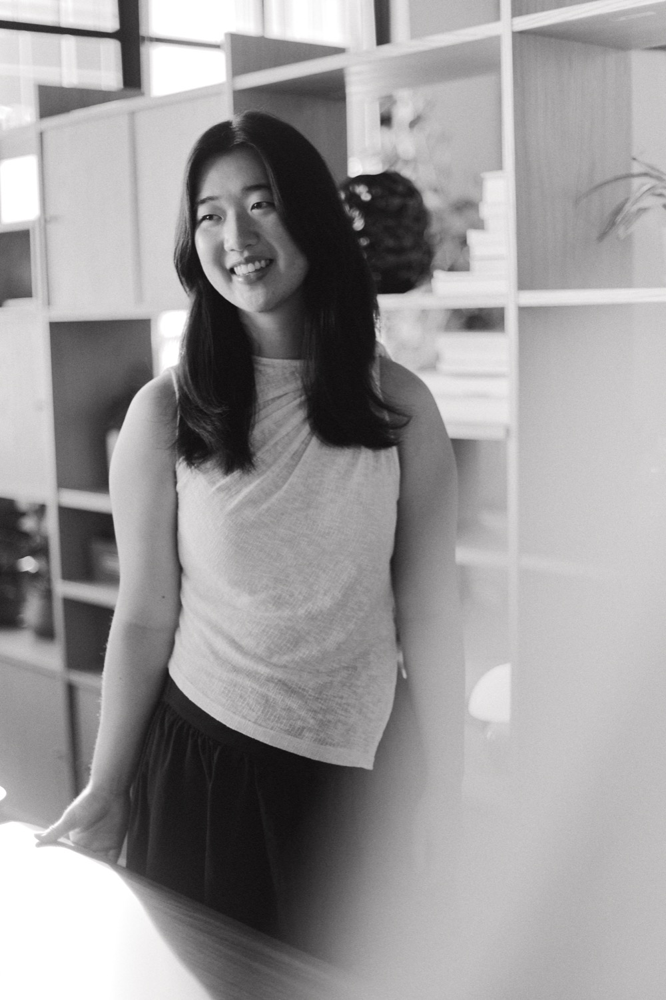
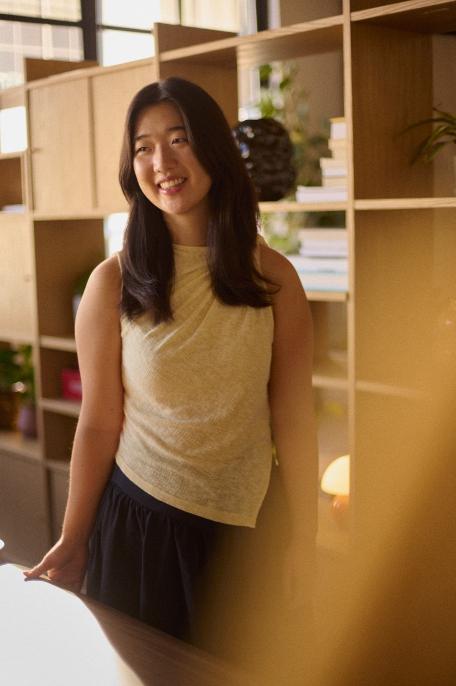

Hi, I’m Abby! I’m a Chinese Australian, living in SF since early 2026.
I have a life long fascination with the concept of eudaimonia - human flourishing. I care about each of us living our most meaningful lives, and doing my part in creating the necessary conditions that empower people to do so.
I currently work on AI safety at AIUC. Concretely this means setting the standard for AI agent safety, security and reliability at aiuc-1.com, and operationalizing this for organizations taking AI safety seriously. If it wasn’t for the existential risk that powerful AI poses for society, I’d probably find myself in the education space - maybe as a teacher, or an academic, or an entrepreneur.
I aim to live a life of courage, creativity, connection and generosity of spirit.
On a day to day, I don't take myself too seriously - I laugh a lot, hug my friends and family tightly, and do my best taking it all in by somewhat antithetically, taking a lot of photos along the way. I’m inspired by the power of mutual aid as an organizational model, and passionate about crafting welcoming environments for all.
Drag to move. With keyboard focus, use arrow keys to move, Escape to reset, or Enter to open.